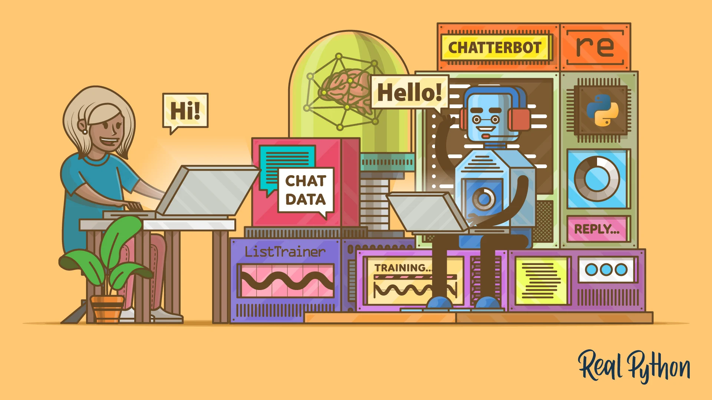

Software Enginner
Hello! I'm a passionate software engineer specializing in backend development with a strong focus on Python, SQL, and SQLite. My expertise lies in building robust applications using frameworks like Django and Flask, where I enjoy creating efficient and scalable web services. In addition to my primary skills, I have a foundational understanding of Java and JavaScript, which allows me to adapt to various programming environments and collaborate effectively with frontend developers. I also have a keen interest in operating systems and system design, as I believe a solid grasp of these concepts is crucial for developing high-performance applications. I thrive on solving complex problems and am always eager to learn new technologies and methodologies. I believe in the power of clean code and maintainable architecture, and I strive to implement best practices in all my projects. Whether working independently or as part of a team, I’m committed to delivering quality solutions that drive positive results. I look forward to connecting and sharing insights with fellow developers!